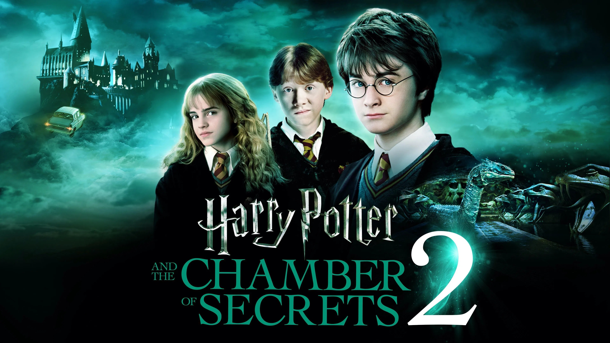

Harry Potter and The Chamber Of Secrets
(In Harry Potter and the Chamber of Secrets, Harry returns to Hogwarts despite warnings from Dobby the house-elf that danger awaits him there. Soon, mysterious attacks begin to occur, leaving students petrified and terrifying messages appear on the walls declaring that the Chamber of Secrets has been opened. With Hermione incapacitated after being petrified, Harry and Ron discover that the monster inside the chamber is a basilisk, controlled through a diary by Tom Riddle, a memory of Lord Voldemort. When Ginny Weasley is taken into the chamber, Harry confronts Riddle, battles the basilisk with the help of Fawkes the phoenix and the sword from the Sorting Hat, and ultimately destroys the diary, saving Ginny and the school. )
